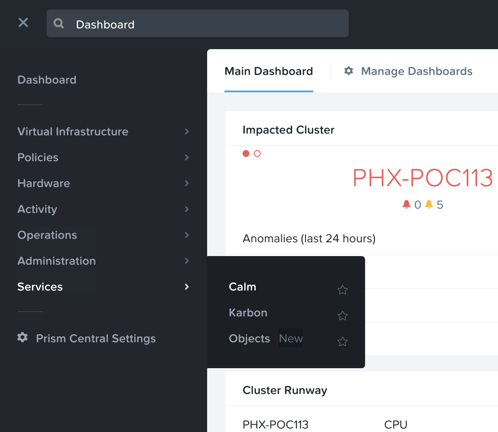
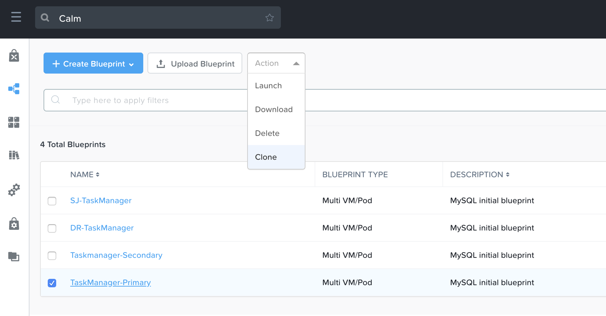
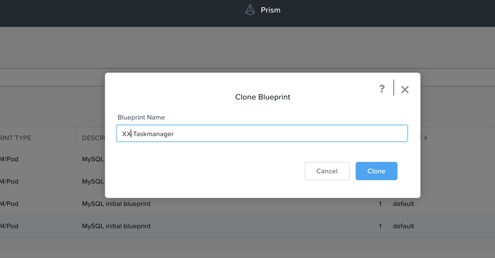
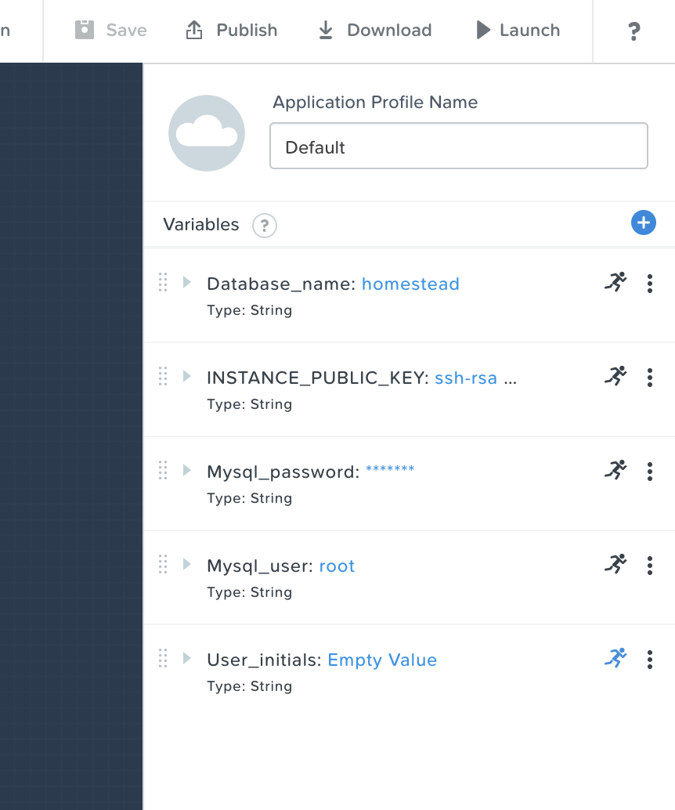
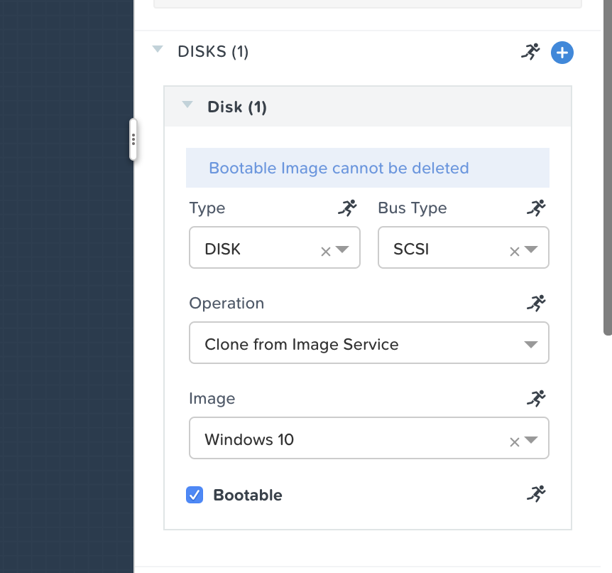

Deploying Task Manager¶
The estimated time to complete this lab is 10 minutes.
Overview¶
This exercise walks you through launching an existing Calm blueprint to deploy a simple Task Manager application used in multiple labs.
Cloning the Blueprint¶
The blueprint for the example application used in this exercise has already been uploaded and configured. There are 2, select 1 based on your network assignment.
In Prism Central, select > Services > Calm.
Click
 Blueprints in the left hand toolbar to view available Calm blueprints.
Blueprints in the left hand toolbar to view available Calm blueprints.Select the tick box next to Taskmanager-Primary or Taskmanager-Secondary based on your network assignment.
Select > Action > Clone.
Fill out the following fields:
- Blueprint Name - Initials-TaskManager
Click Clone.
Note
If you receive an error, refresh your browser and try again.
Configuring the Blueprint¶
The blueprints are preconfigured with the necessary information required to lauch the application including credentials.
Click on your newly created bluprint Initials-Taskmanger
You will see the structure of the application in graphical form.
In the Application Profile pane on the right, you will see (Don’t Change) the following fields:
- Database_name - homestead
- INSTANCE_PUBLIC_KEY - ssh-rsa …
- Mysql_password - nutanix/4u
- Mysql_user - root
- User_initials - Empty Value

Note
FYI Please feel free to take a look around the bluprint to see how things are configured but please don’t change anything.
Select the WinClient service and in the pane on the right, under the VM tab, see the Image is set to the Windows 10 disk image as shown below.
Under Network Adapters (NICs), ensure that NIC 1 is set to your Assigned network as shown below.

Select the WebServer, HAProxy, and MySQL services and ensure each has NIC 1 set to your Assigned network.

There should be no changes to be saved.
Launching the Blueprint¶
After you have confirmed the settings, Publish, Download, and Launch are now available from the toolbar. Click Launch.
Fill out the following fields:
- Name of the Application - Initials-TaskManager
- User_initials - Initials

Click Create.
You can monitor the status of your application deployment by clicking
 Applications and clicking your application’s name.
Applications and clicking your application’s name.Provisioning the complete application will take approximately 15 minutes. Proceed to the next section of the lab while the application is provisioning.